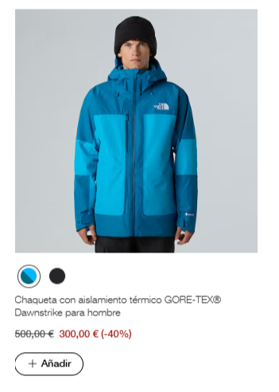

📄 Objetivo
Análisis detallado de la web The North Face para identificar elementos de composición, peso visual, rendimiento y accesibilidad en el uso de imágenes.
1. Análisis Visual y Compositivo (Home Page)
- Imagen principal: Es el Hero Banner de gran impacto visual.
- Punto focal: El botón con fondo sólido que dice "Comprar ahora". El contraste del botón sobre la imagen de naturaleza guía el ojo directamente a la acción.
- Peso visual: Las imágenes de productos y paisajes ocupan grandes bloques, mientras que el menú superior se mantiene minimalista para no robar protagonismo.
- Balance compositivo: Utiliza un balance asimétrico dinámico (regla de los tercios) para dar sensación de movimiento y libertad.

2. Función y Valor de las Imágenes
Las imágenes de producto tienen una función puramente informativa, permitiendo ver texturas y materiales. Aportan un valor esencial, ya que sin ellas la confianza del usuario en el equipo técnico disminuiría drásticamente.
3. Rendimiento e Impacto
North Face utiliza imágenes responsivas y Lazy Loading. Sin embargo, al usar alta resolución, el tiempo de carga puede ser superior al de webs puramente de texto.
- Influyen negativamente: Zara. Muchos vídeos automáticos de alta calidad que ralentizan el renderizado inicial.
- Cargan más rápido: Amazon. Diseño plano, con menos imágenes de gran formato y más optimización de carga masiva.
4. Accesibilidad y SEO
Texto alternativo (Alt Text): Un ejemplo real es alt="Chaqueta térmica negra para hombre en expedición de montaña".
Identidad de marca: Se refleja mediante el uso de fotografía de aventura real, no de estudio, reforzando el espíritu de exploración. En cuanto al SEO, utilizan nombres de archivo optimizados y datos estructurados para Google Images.
5. Psicología de la Memoria
- Memoria Semántica: Favorecida por los datos técnicos, tablas de tallas y materiales (Gore-Tex, etc).
- Memoria Episódica: Favorecida por las imágenes de expediciones que cuentan historias y conectan con las emociones del usuario.
🚀 Core Web Vitals
Para aplicar estas métricas a mi propia web, debo vigilar el LCP (tiempo de carga de la imagen más grande) y el CLS (evitar que el contenido salte al cargar las imágenes) definiendo siempre dimensiones fijas.